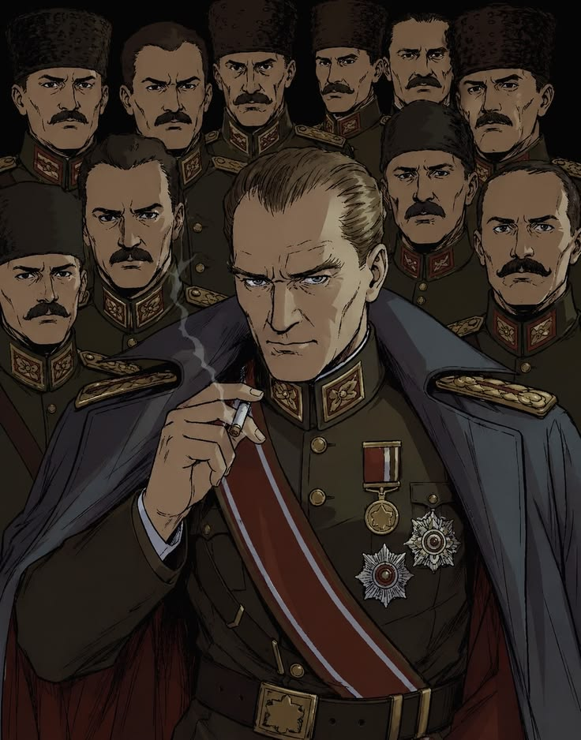
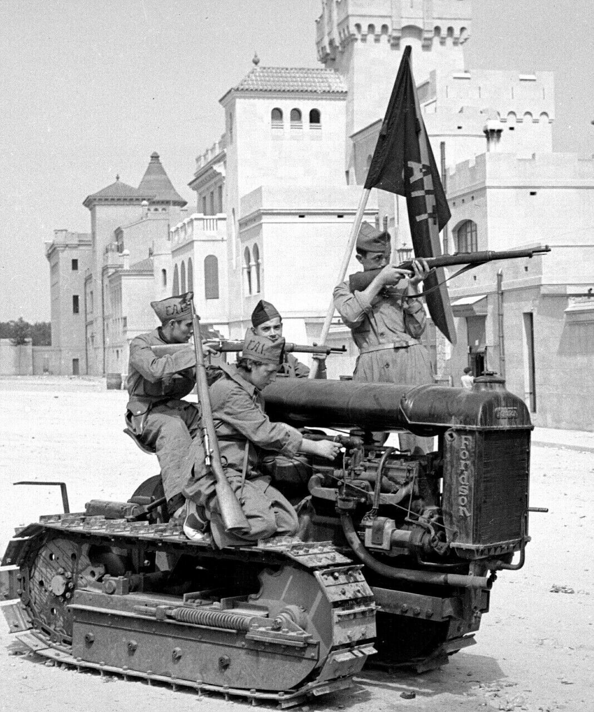
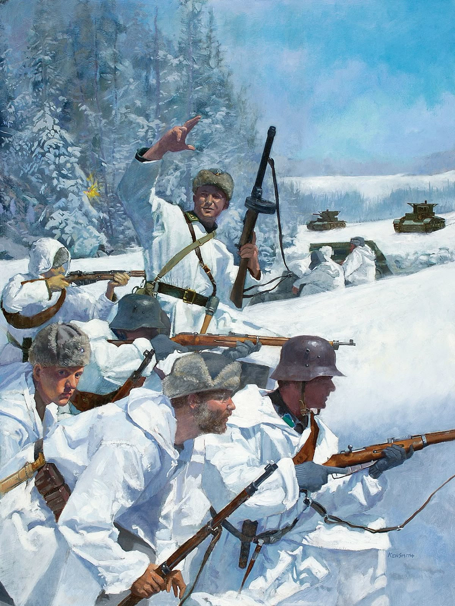
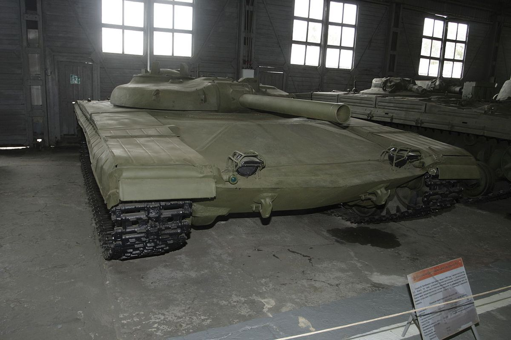
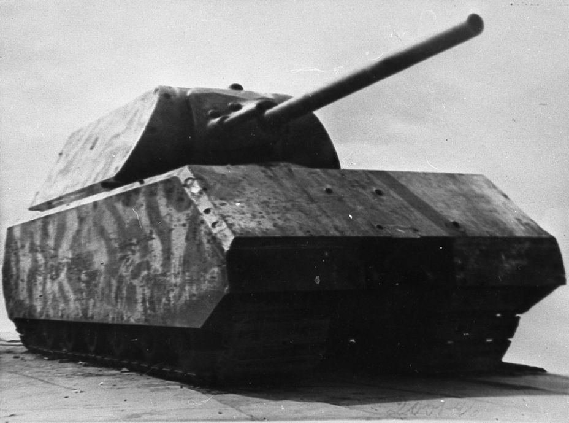
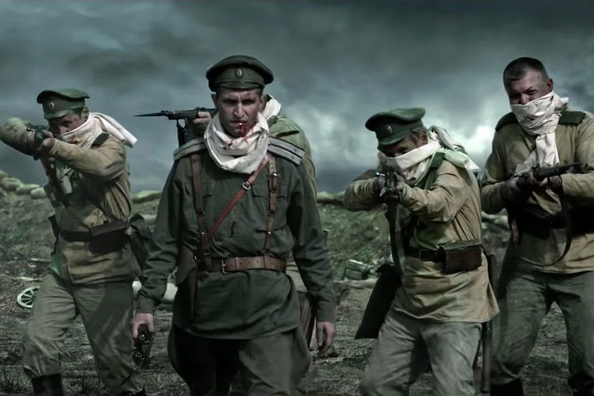
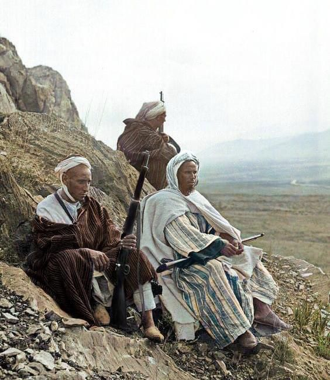
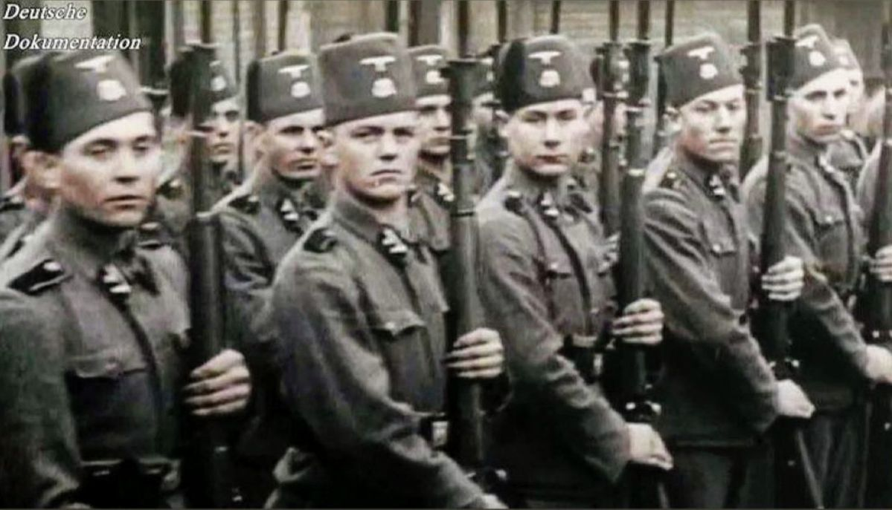
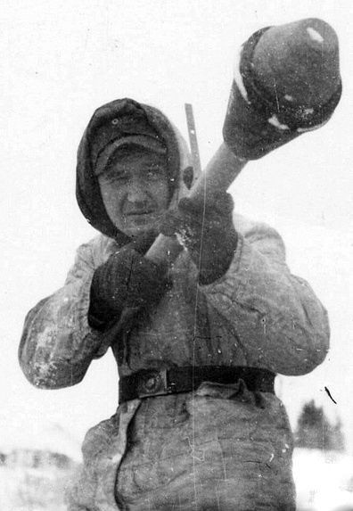

Perang Dunia II: Pertempuran yang Mengubah Dunia
Mengenal kronologi, strategi, dan dampak Perang Dunia II yang menjadi konflik terbesar dalam sejarah manusia.
Baca Selengkapnya →
Strategi Perang Sun Tzu yang Masih Relevan
Pelajaran dari kitab The Art of War karya Sun Tzu yang hingga kini dipakai oleh militer dan pemimpin dunia.
Baca Selengkapnya →
Kejatuhan Kekaisaran Ottoman
Bagaimana kekaisaran yang pernah menguasai tiga benua akhirnya runtuh dan melahirkan Turki modern.
Baca Selengkapnya →Teknologi Senjata Modern yang Mengubah Peperangan
Dari drone tempur hingga rudal hipersonik, teknologi militer modern yang mendefinisikan ulang strategi perang.
Baca Selengkapnya →
Perang Dingin: Dua Kekuatan yang Mengancam Dunia
Rivalitas Amerika Serikat dan Uni Soviet yang berlangsung puluhan tahun dan membentuk peta dunia modern.
Baca Selengkapnya →
Perang Saudara Spanyol
Konflik brutal 1936–1939 yang membelah Spanyol menjadi dua kubu dan menjadi pemanasan Perang Dunia II.
Baca Selengkapnya →
Perang Musim Dingin Finlandia
Bagaimana Finlandia kecil berhasil menahan serangan Uni Soviet yang jauh lebih besar selama musim dingin 1939.
Baca Selengkapnya →
Tank Object 775
Tank eksperimental Soviet dengan meriam roket unik yang tidak pernah diproduksi massal namun meninggalkan jejak sejarah.
Baca Selengkapnya →
Tank Maus — Monster Baja Nazi
Tank terberat yang pernah dibuat manusia, 188 ton baja Jerman yang tidak pernah bertempur di medan perang.
Baca Selengkapnya →
Attack of the Dead Men
100 tentara Rusia yang terkena gas klorin bangkit menyerang dan memukul mundur pasukan Jerman.
Baca Selengkapnya →
Perang Rif
Perlawanan suku Berber Maroko melawan Spanyol dan Prancis 1921–1926 yang menginspirasi gerakan kemerdekaan dunia.
Baca Selengkapnya →Perang Dunia I
Konflik global 1914–1918 yang menghancurkan empat kekaisaran besar dan merenggut 20 juta jiwa manusia.
Baca Selengkapnya →
Divisi SS Handschar
Divisi Waffen-SS unik yang terdiri dari Muslim Bosnia bertempur untuk Nazi Jerman di Balkan pada PD II.
Baca Selengkapnya →
Panzerfaust — Senjata Anti-Tank Jerman
Senjata anti-tank sekali pakai yang murah dan mematikan, mimpi buruk pasukan lapis baja Sekutu di akhir PD II.
Baca Selengkapnya →
Perang Napoleon: Ambisi Mengguncang Eropa
Serangkaian konflik besar yang melibatkan Napoleon Bonaparte melawan koalisi kekuatan Eropa.
Baca Selengkapnya →
Revolusi Prancis: Runtuhnya Feodalisme
Periode perubahan sosial radikal yang menggulingkan monarki absolut Prancis.
Baca Selengkapnya →
Pertempuran Thermopylae: 300 Spartan
Kisah legendaris Raja Leonidas memimpin pasukan kecil melawan Persia.
Baca Selengkapnya →
Perang Salib: Perebutan Tanah Suci
Ekspedisi militer umat Kristen Eropa untuk merebut Yerusalem.
Baca Selengkapnya →
Revolusi Rusia 1917: Lahirnya Uni Soviet
Penggulingan monarki Tsar yang melahirkan negara komunis pertama.
Baca Selengkapnya →
Pengeboman Pearl Harbor: Bangkitnya AS
Serangan mendadak Jepang yang menyeret AS ke dalam Perang Dunia II.
Baca Selengkapnya →
Pertempuran Stalingrad: Titik Balik PD II
Pertempuran paling berdarah yang mematahkan mitos Nazi Jerman.
Baca Selengkapnya →

Bom Atom Hiroshima dan Nagasaki
Satu-satunya penggunaan senjata nuklir dalam perang.
Baca Selengkapnya →
Perang Korea: Konflik Tak Berakhir
Perang proksi Perang Dingin antara Korea Utara dan Selatan.
Baca Selengkapnya →
Perang Vietnam: Neraka di Hutan
Konflik panjang yang melibatkan taktik gerilya Viet Cong.
Baca Selengkapnya →
Reformasi Protestan: Guncangan Gereja
Gerakan Martin Luther yang menantang otoritas Gereja Katolik.
Baca Selengkapnya →
Genghis Khan dan Kekaisaran Mongol
Pendiri kekaisaran darat terbesar dalam sejarah.
Baca Selengkapnya →
Penemuan Benua Amerika oleh Columbus
Pelayaran Columbus pada 1492 yang membuka pintu kolonialisme.
Baca Selengkapnya →
Pasukan Spartacus: Pemberontakan Gladiator
Pemberontakan budak terbesar melawan Republik Romawi.
Baca Selengkapnya →

Peradaban Mesir Kuno dan Piramida
Salah satu peradaban tertua dengan peninggalan arsitektur luar biasa.
Baca Selengkapnya →
Kekaisaran Romawi: Kejayaan dan Keruntuhan
Dari Republik menjadi Kekaisaran besar yang menguasai Eropa.
Baca Selengkapnya →

Alexander Agung: Penakluk Dunia
Raja Makedonia yang menaklukkan Kekaisaran Persia hingga India.
Baca Selengkapnya →
Peradaban Lembah Indus
Peradaban maju kuno di Asia Selatan dengan sistem drainase canggih.
Baca Selengkapnya →
Pasukan Janissari: Pengawal Elit Ottoman
Pasukan infanteri elit Kekaisaran Ottoman yang dilatih sejak muda.
Baca Selengkapnya →

Revolusi Industri: Awal Dunia Modern
Pergeseran besar dari tenaga manusia ke mesin.
Baca Selengkapnya →
Perang Candu: Inggris vs Tiongkok
Konflik yang membuka pintu Tiongkok bagi imperialis Barat.
Baca Selengkapnya →
Pasukan Gurkha: Tentara Legendaris Nepal
Pasukan pemberani dari Nepal yang bertempur untuk Inggris.
Baca Selengkapnya →
Peradaban Maya: Astronomi dan Matematika
Peradaban Amerika Tengah yang menguasai astronomi.
Baca Selengkapnya →

Pasukan Terakota: Pasukan Bawah Tanah
Pasukan tentara dari Dinasti Qin yang menjadi penemuan arkeologi.
Baca Selengkapnya →